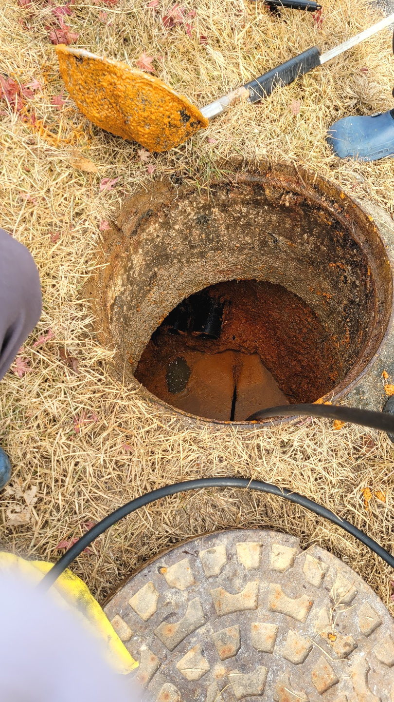
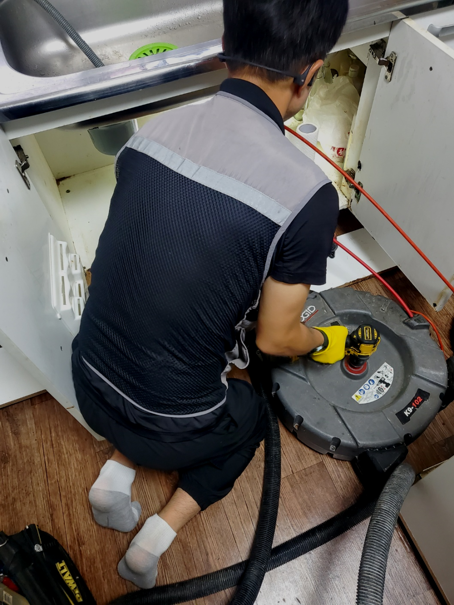
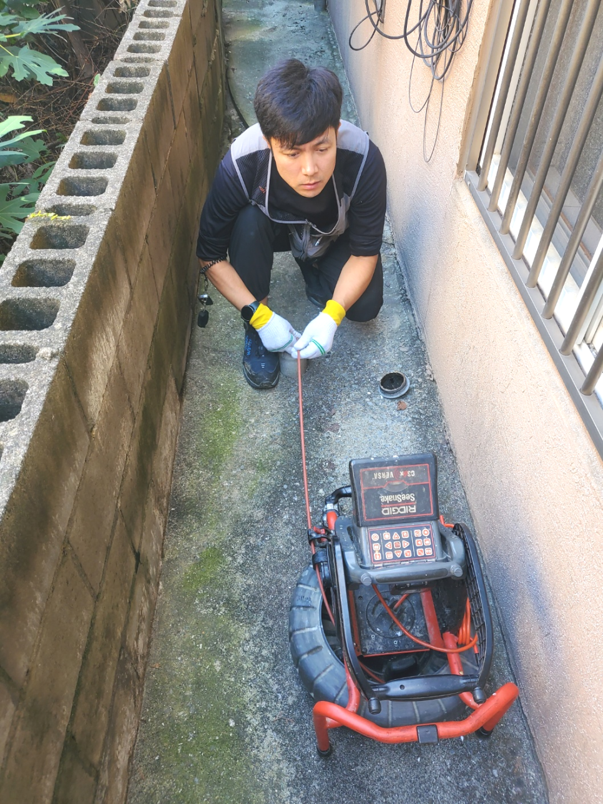
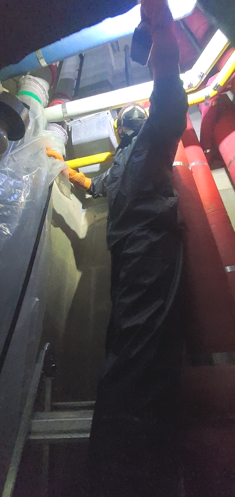
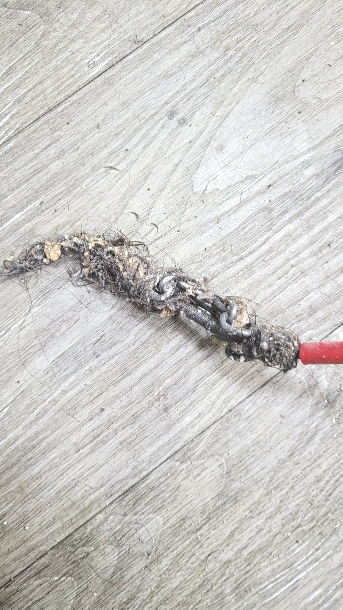
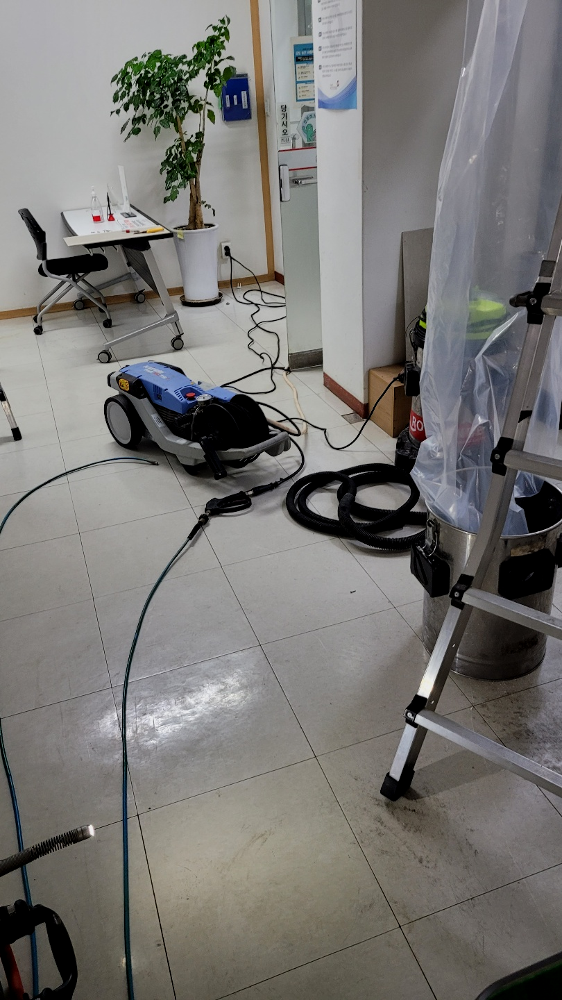

🏠 수원 우만동 하수도막힘 연무동 주방 물 넘침 배관뚫는업체
수원 우만동 싱크대막힘 전문 시공 후기

📋 작업 개요
- 위치: 수원 우만동, 우만동, 수원
- 서비스 유형: 싱크대막힘, 변기막힘, 하수구막힘, 배관막힘, 누수수리, 역류해결, 뚫는업체, 배관청소, 고압세척
- 작업 일시: 2024. 1. 8. 21:46
- 업체명: 하수구수사대 (010-5615-2118)
🔍 문제 상황
반갑습니다!
설비전문업체 "하수구수사대"를 찾아주셔서 감사드려요^^
영원히 막히지 않고 사용할 수 있는 배수관는 존재하지 않습니다. 건물이 노후되었다면 내부 상황을 살펴볼 필요가 있습니다. 집에서 악취가 나기 시작했다거나 배수관물이 내려가는 속도가 늦어질 경우 즉각 탐지를 맡겨봐야 합니다.
수원 우만동 하수도막힘 연무동 주방 물 넘침 배관뚫는업체

🔎 원인 분석
💡 전문가 진단: 수원 우만동 하수도막힘 연무동 주방 물 넘침 배관뚫는업체
하지만 이게통하지않을땐 세척용액들이 단단해져버려서 배출관에 침식되어서 심각해져버리기도해 발굴이되었을시에 기술자들과 논의를해보는것이 똑똑하다고할수있습니다. 배출관배수가안될시엔 통수가원활하지않을거말고도 수도가역으로흐르는걸로 수평의모습이흐트러지기도해요
그래서 어떠한 물질이 배수관를 막고 있는지를 내시경 카메라를 통해서 확인을 하는 것이 필요합니다. 막혀있는 물질이 무엇이냐에 따라서 작업의 방향이 결정이 되고 또한 어떠한 장비를 사용해야 할지를 판단할 수 있습니다.
나도 모르게 음식물 찌꺼기를 버려서 막힐 때도 있지만 이런 경우를 제외하고는 몇 년 동안 고여있던 이물질들이 누적되어배수관 내부에 계속해서 쌓이다 보니 물길 이외에는 더 이상 내려갈 수 없어 막히게 되지요.
배출관작업 도중에 혹시 무슨 일이 생길 수도 있으니 크란즐과 로덴베르거라는 전동 스프링기도 준비해서 대비를 하기로 했습니다. 앞쪽 입구에서만 접근이 가능하며 작업에도 한계가 잇는 상황이기에 강력한 전문기계를 사용하면서도 속도를 조절해야 했습니다.
고객님께서는 혹시라도 강한 약품의 성분으로 인해서 배수배관이 녹아내려서 누수가 생기지는 않는지 걱정하셨습니다. 하지만 저희가 사용하는 제품의 경우 석회 성분을 녹이기 위한 전용 약품이기에 거품이 잔뜩 일어나기는 하지만 플라스틱이나 스테인리스 형태의 배수배관에는 영향을 주지 않습니다.

🔧 작업 과정
배수구를 뚫는 약품이나 뚫어뻥 등등 다양한 방법으로 통해 해결해 보았지만 쉽지않아 결국 배출구업체 알아보셨다고 합니다.요즘엔 업체가 워낙 많아서 어느곳으로 연락을 해야할지 고민스러우셨지만, 저희에게 요청을 하게 되셨다고 잘부탁드린다고 말씀하셨습니다.
사용을 안한다면 나아지진 않을까싶으실겁니다 흔한경우는아니지만 방치해버리게되면 퇴수 배관안쪽에 자리잡고있는 이물질에서부터 유발되는 악취들은 막을수가없답니다.
이것만으로 끝나는게아닌 방치했을때는 다른세대에 안좋은영향을 주기때문에 유의하셔야하는데요. 배출관막힘 의뢰자분만 고치신다면 상관없겠지만 이와같은것이 생기게되면 타격주신것을 변상해야되기에 큰피해를입으실텐데요.
고객님의 허락을 받은 후 저희는 본격적으로 스케일링 작업을 시작하기에 앞서 석션기 작업을 시작하였습니다. 석션기 작업을 하지 않고는 하수관 배관이 꽉 막혀 장비가 들어갈 틈도 없기에 청소가 어렵습니다. 따라서 1차로 석션기를 활용하여 막힌 곳을 뚫어주고 공간을 넓혀 장비가 잘 투입될 수 있도록 만들어주는 과정을 거쳐야 합니다.
고객분께 여쭤보니 건물에서 사용한 대걸레 등 큰 걸레들에서 나온 이물질을, 따로 걸러내지 않고 바닥으로 흘려보낸 적이 많으며 계속해서 이렇게 청소를 해왔다고 하셨습니다.
물질을 제거한 뒤에는 배관을 다시 한번 씻어내줘야 해서 고압세척기로 강력히 씻어내면 물때나 기름때가 완벽히 없어집니다. 배출관 뚫음 현장에서 보여준 고압세척기의 힘은 대단했는데요.
그래서 전문설비업체의 도움이 꼭 필요한 것입니다. 확실하지 않은 이유와 장비로 뚫으려고 한다면 상황은 더 악화되며 배관막힘이 심해지고 해결이 된다는 보장도 없지만 처음부터 전문 장비의 도움을 받으며 작업하게 되면 빠른 뚫음은 물론이거니와 막힌 변기도 바로 시원하게 사용이 가능해질 테지요.
갑작스러운 상황에 당황하신 고객님들께 부담적인 하수관뚫는 비용을 줄여드리기 위해 합리적인 가격에 최상의 서비스를 제공하고 있으니 타 업체에서도 해결하지 못한 하수관현장이라면 무조건 저희를 불러주세요.


✅ 작업 완료
막힌 배관를 내시경으로 정밀한 진단을 진행한 뒤에 그에 대해서 설명을 해드리면서 배관막힌 부분을 뚫어드리고 있습니다. 도움이 필요하시다면 요일 상관없이 언제든지 편안하게 문의를 해주시면 현장으로 1시간 내로 달려가 문제 있는 배관 막힘을 해결해 드리겠습니다!
#하수구막힘 #하수구뚫음 #하수구역류 #씽크대막힘 #싱크대역류 #오수관막힘 #하수구청소 #욕실하수구막힘 #변기막힘 #하수구뚫는비용 #싱크대수리 #화장실막힘




⚠️ 베란다 누수 및 방수 관리 방법
- ✅ 비가 많이 올 때 창틀 주변이나 아래층 천장에 얼룩이 생기는지 정기적으로 확인해 보세요.
- ✅ 우수관 주변 실리콘 마감이 들뜨거나 깨진 틈새가 있는지 손상 여부를 수시로 체크하세요.
- ✅ 베란다 바닥 타일의 줄눈(메지)이 소실되면 그 틈으로 물이 침투하여 누수가 유발됩니다.
- ✅ 누수 의심 증상 발견 시 방치하면 아래층 손실이 커지므로 즉시 전문가의 진단을 받으십시오.
💡 핵심 정리
- 확실한 장비 작업(내시경 점검 및 샤프트 스케일링)으로 원인을 뿌리 뽑습니다.
- 작업 후 1년 이내에 동일한 부위 재발 시 100% 무상 A/S 서비스를 보장합니다.
- 서울 · 경기 · 인천 전 지역에 24시간 언제든 긴급 출동할 수 있도록 항시 대기 중입니다.
❓ 자주 묻는 질문 (FAQ)
🚨 수원 우만동 싱크대막힘 문제로 고민이신가요?
정확한 원인 진단과 확실한 시공으로 재발 없는 해결을 약속드립니다.
24시간 긴급 출동 | 서울 · 경기 · 인천 전지역 | 1년 내 재발 시 무상 A/S